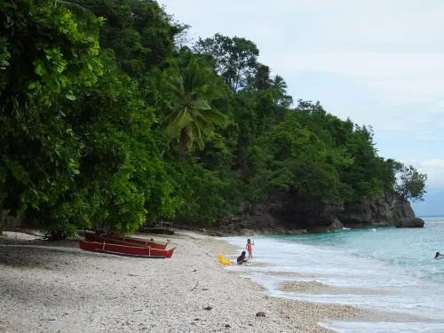
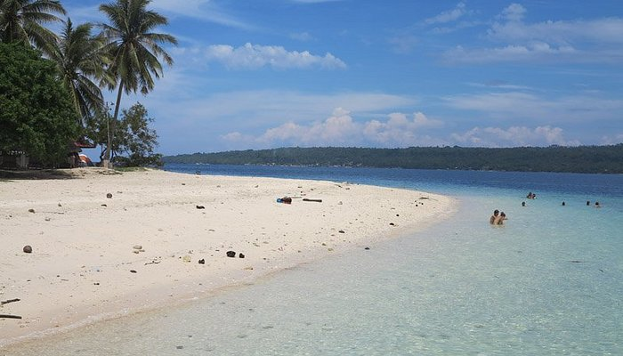
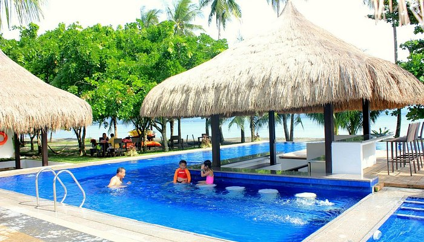
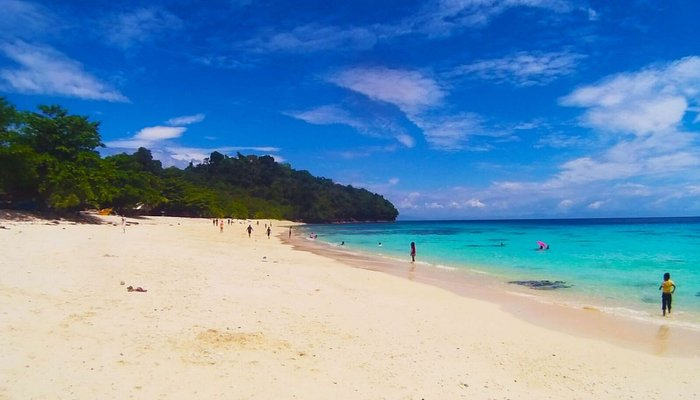

Beaches in Davao del Norte Province
Davao is known for its pristine beaches, crystal-clear waters, and lush landscapes, but beyond the popular tourist spots, there are hidden gems that offer untouched beauty and tranquility. If you’re looking to escape the crowds and discover Davao’s best-kept secrets.

Canibad beach
Canibad Beach, nestled within the Island Garden City of Samal in Davao del Norte, offers a secluded escape characterized by its pristine, crystal-clear waters. This hidden gem is renowned for its dramatic steep cliffside setting, which provides a breathtaking backdrop for adventurous pursuits such as exhilarating cliff jumping and vibrant snorkeling experiences. As part of the larger "Canibad Secret Paradise" area, the beach boasts powdery white sand, mesmerizing teal waters, and the tranquil shade of coconut trees. However, reaching this idyllic shore is an adventure in itself, involving a descent of approximately 195 steps, adding to the secluded and adventurous allure of Canibad Beach.

Kaputian beach
Kaputian Beach Park Resort, situated in the picturesque Kaputian area of the Island Garden City of Samal in Davao del Norte, stands as a premier beachfront destination offering both lodging and day-use facilities. This resort is distinguished by its stunning stretch of white sand beach, complemented by exceptionally clear waters that create an inviting aquatic environment. The resort boasts a wide, expansive shoreline, making it an ideal location for a variety of activities, from leisurely swimming to relaxing sunbathing. Its natural beauty and well-appointed facilities provide a perfect setting for a memorable coastal getaway.

Banana beach
Banana Beach Resort is touted as the world's only beach resort within a banana plantation, and it is located in Tagum City, Davao del Norte, Mindanao, Philippines. The resort is nestled within a sprawling 760-hectare banana plantation owned by Hijo Resources Corporation. Its coastline beach spans 4.5 kilometers of a flat and even seabed, which provides guests with popular water activities such as kayaking, skimboarding, banana boat riding, beach volleyball, water trampoline, Frisbee throwing, or simply building sand castles.

Alorro beach
Alorro Crystal Beach Resort, a cherished family-operated beachfront destination, is nestled in Kaputian, within the Island Garden City of Samal, Davao del Norte, Philippines. This resort is celebrated for its breathtaking natural beauty, featuring crystal-clear waters that gently lap against a pristine white sand shore. It offers an exceptional aquatic playground for visitors, particularly those keen on snorkeling, as the surrounding waters teem with vibrant coral reefs and a diverse array of colorful fish, promising an unforgettable underwater experience.
Reference: davaodelnorte-beaches